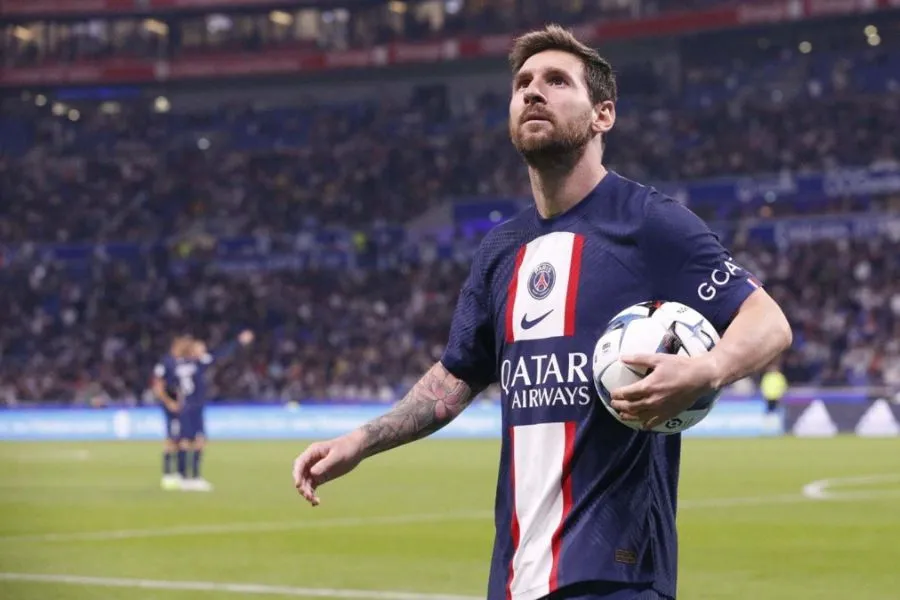
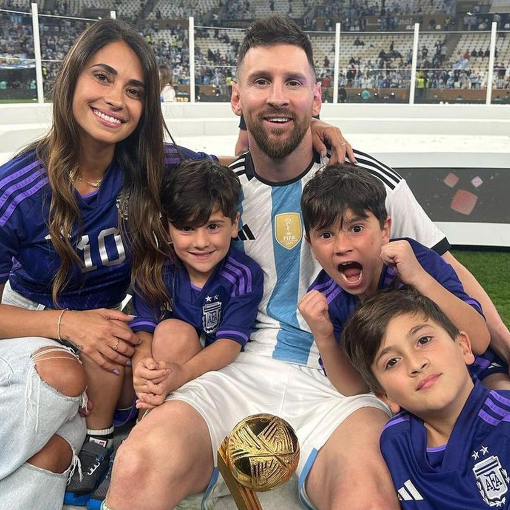

Inicio, ¿Quién es?
Lionel Andrés Messi Cuccittini, conocido como Leo Messi nació en Rosario, Argentina el 24 de junio de 1987, es un futbolista que juega como delantero o centrocampista. Jugador histórico del Fútbol Club Barcelona, al que estuvo ligado veinte años, desde 2021 integra el plantel del Paris Saint-Germain de la Ligue 1 de Francia. Es también internacional con la selección de Argentina (Actual campeón del Mundo), equipo del que es capitán.
Criado en el seno de una familia humilde, es hijo de Jorge Horacio Messi, trabajador de una fábrica, y de Celia María Cuccittini, una limpiadora a media jornada. Tiene dos hermanos y una hermana.
De niño jugó fútbol callejero con sus hermanos, Matías y Rodrigo, y también con su primo Tomi. Le apodaron la pulga por su baja estatura.
Considerado con frecuencia el mejor jugador del mundo y uno de los mejores de todos los tiempos es el único futbolista en la historia que ha ganado, entre otras distinciones, siete veces el Balón de Oro, seis premios de la FIFA al mejor jugador del mundo, seis Botas de Oro y dos Balones de Oro de la Copa Mundial de Fútbol. En 2020, se convirtió en el primer futbolista y el primer argentino en recibir un premio Laureus y fue incluido en el Dream Team del Balón de Oro.
Desde 2007, Messi está en pareja con Antonela Roccuzzo, a quien conoce desde niño. Se la presentó Lucas Scaglia, primo de ella que jugaba también en las inferiores de Newell's. Mantuvieron una relación a la distancia durante tres años hasta que, después del Mundial de Sudáfrica, ella se instaló en Barcelona. El jugador hizo público su noviazgo en una entrevista en el programa Hat Trick Barça a principios de 2009 y luego se publicaron unas fotografías de la pareja en el carnaval de Sitges. Se casaron en una ceremonia civil en el hotel City Center de Rosario el 30 de junio de 2017.
La pareja tiene tres hijos: Thiago (2 de noviembre de 2012), Mateo (11 de septiembre de 2015) y Ciro (10 de marzo de 2018), todos nacidos en Barcelona. Para celebrar el primer embarazo de su pareja, Messi colocó la pelota debajo de su camiseta después de anotar en la victoria argentina por 4-0 ante Ecuador el 2 de junio de 2012, antes de confirmar el embarazo en una entrevista dos semanas más tarde. Messi anunció la llegada de su primer hijo en su página de Facebook, en la que escribió: "¡Hoy soy el hombre más feliz del mundo, mi hijo nació y gracias a Dios por este regalo!" También se tatuó el nombre y huellas de manos del niño en la pantorrilla izquierda. Los tres fueron bautizados en Rosario.